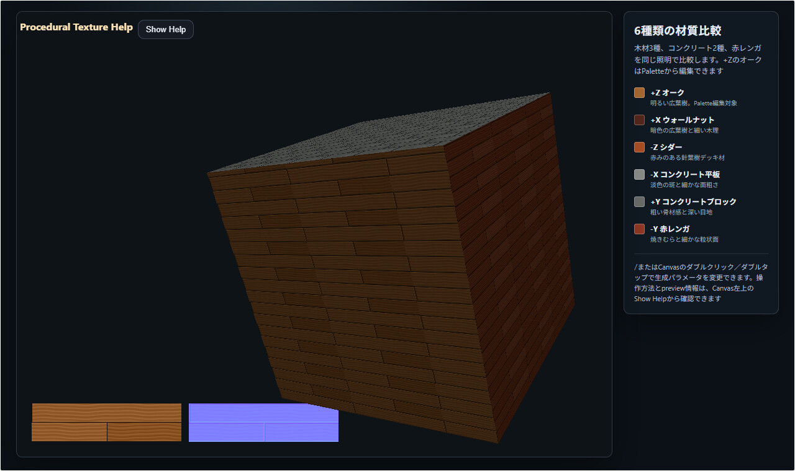

procedural_texture
English | 日本語

概要
ProceduralTiledSurfaceが生成するColor mapとHeight mapを、立方体の6面で比較するためのサンプルです。Height mapからNormal mapを生成し、Color mapと同じUVで各面へ貼ります。木材3種、コンクリート2種、赤レンガ、光沢のあるビニールタイルの7 presetを同じ形状と照明で観察できます。
初期状態の6面は木材3種、コンクリート2種、赤レンガです。+ZはCommand Palette先頭ページから7 presetのいずれかへ直接変更でき、ビニールタイルも+Zで確認できます。独立CPU参照classの周期Perlin fBmを、木理の蛇行、コンクリートの色斑、レンガの焼きむら、大理石、Voronoiのwarp、VinylのCloudyとLinenへ材質別に利用します。Terrazzoはutil.jsの座標hashでモノトーンchipを配置します。
各presetは材質に応じたvariationCellを持ちます。OakとCedarは2部材×4行、Walnutは1/3のrunning-bond周期を閉じるため2部材×6行、コンクリートブロックは2部材×4行、stack配置のコンクリートパネルは1枚×1行、レンガは4×8、正方形のビニールタイルは4×4です。木材の初期LayoutはOakが1/2、Walnutが1/3、Cedarが1/4のrunning-bondです。周期境界をまたぐ一枚の部材は同じvariation IDへ折り返すため、部材途中で色や模様位相が切り替わりません。
このサンプルはCPU参照実装です。WebGPU Compute Shaderによる生成、材質編集、preview、完成definitionの出力は、上位サンプルのtexture_catalogで確認できます。
実行方法
実行ファイルは./procedural_texture.htmlです。WebGPU対応ブラウザで開き、立方体をドラッグして各面へ回り込みます。ホイールまたはピンチで距離を変更し、目地の境界に付く法線マップの陰影を近距離から確認できます。/キー、またはCanvasのダブルクリック／ダブルタップでCommand Paletteを開くと、生成パラメータを実行中に変更できます。
使用しているwebg機能
WebgAppはGPU初期化、描画ループ、Canvas、入力をまとめます。WebgApp.createOrbitEyeRig()はドラッグ、ホイール、タッチ操作を同じ軌道カメラへ接続します。
buildHelpPanelOptions()とshowOverlayPanel()は、サンプル名、map生成の流れ、previewの左右順序、操作方法を一つのHelpPanelへ表示します。起動時は本文を隠した状態にし、必要なときだけCanvas左上のShow Helpから開きます。これらの情報をCanvas内のFont HUDとして常時重ねないため、立方体とtexture previewを遮らず観察できます。
CommandPaletteは+Z面を編集対象とし、5ページで構成します。各ページの左上にPrev、右上にNextを置きます。1ページ目にはOak、Walnut、Cedar、Panel、Block、Brick、Vinylの7ボタンを置きます。続くページで寸法、色、目地幅、白〜ダークグレーの目地tone、variation列数・行数、材質模様を編集します。Row Offsetは0、1/2、1/3、1/4から直接選択でき、Pattern modeはWood、Concrete、Brick、Marble、Voronoi、Cloudy、Linen、Terrazzo、Noneの直接選択です。
Backgroundは編集対象となる+Z面のColor textureとNormal textureを、3D形状より奥の左下へ描画します。1:1で収まる場合は横並びまたは縦並びを自動選択し、どちらにも収まらない場合だけ縦横比を保って縮小します。cropや着色は行いません。
Shapeは24頂点、12三角形から一つの立方体を構成し、面ごとに6つのmaterial slotを割り当てます。各面はaddVertexUV()で4頂点へ反復UVを設定し、addPlane()で一つの四角面として登録します。反復回数を表す1より大きなUを球面UVの継ぎ目として補正させないため、頂点登録前にsetTextureMappingMode(1)で平面mappingを明示します。それぞれのslotは別のColor textureとNormal textureを参照するため、一つのShapeでも面ごとに設定の異なるプロシージャルテクスチャを表示できます。
Texture.setImage()はCPU上で生成したColor mapとHeight mapをGPUへ転送します。Texture.buildNormalMapFromHeightMap()はHeight mapの近傍差分からNormal mapを生成します。Normal mapの傾きはHeight mapが表す実寸範囲と1pixelの物理寸法から計算するため、解像度だけを変更したときに凹凸の傾きが大きく変わらない構成です。
微細な汚れと凹凸はPerlinNoise2D.fillFbm()で周期Float32Arrayへ一括生成し、Color／Height loopから参照します。+Z編集面は最大2件のLRU cacheを持つため、色や汚れ量などfield座標を変えないPalette変更では同じsurface detail fieldを再利用します。fieldはCPU中間値であり、Normal mapは最終Heightから一枚だけ生成します。
generatorの構成
ProceduralMaterials.resolve()はコアのwebg/ProceduralMaterials.jsから完成したpresetを読み出し、ProceduralTileSpecで検証します。コア23 presetのうち、このCPU参照sampleは7 presetを選択対象とします。pattern編集では柾目、板目、mixを含む12 modeを選べます。Command Paletteで選択したpresetと上書きは+Z面だけへ適用します。未知のpreset、未知の項目、範囲外の値は例外にし、近い値や既定値へ置き換えません。
Command Paletteで変更できる値
1ページ目では7 presetを直接選択します。2ページ目では1m当たりのpixel数、部材の長辺と短辺、長手方向、積み方、行のずらし量を変更します。3ページ目では基準色RGB、部材ごとの色差、汚れ色RGBを変更します。4ページ目では汚れ量、目地tone、目地深さ、縁の丸み、目地幅、variation列数・行数を変更します。5ページ目では9種類のPattern modeを直接選択します。
目地幅は0mも選択できます。0の場合は目地色、目地深さ、縁の丸みをすべて生成結果から除外し、目地部分の凹凸を作りません。
目地幅のボタン刻みは現在の解像度の1 pixel分です。100、200、400 pixels/mでそれぞれ10mm、5mm、2.5mm刻みとなります。
既定の表面寸法は、フローリング1800×150mm、コンクリートパネル1800×900mm、コンクリートブロック390×190mm、レンガ210×100mm、ビニールタイル300×300mmです。指定のある厚さはpreset metadataとF9 JSONへ保存する情報です。平面textureは表面の幅・高さと模様の設定から生成します。
2〜5ページ左上のResetは現在選択中のpreset基準値へ戻し、Nextは次ページへ進みます。Pixels / meterは0.01m単位の目地幅などをpixelへ正確に換算できる100、200、400から選びます。LayoutをStackへ変更したときは、stack配置の定義に合わせて行のずらし量を0へ変更します。
設定値のJSON出力
F9の後にMを押すとDebugDockを表示できます。DockのCopy JSON、またはF9の後にVを押すと、Command Paletteの現在値をcontext.proceduralTexture.paletteSettingsへ含むdiagnostics JSONをコピーします。variationCell、実際のpreview配置、直近のCPU生成・texture/Normal・全体の所要時間も出力します。Palette変更時は+Zだけを再生成し、固定比較用5面のtextureを再利用します。
ProceduralTiledSurface.generate()は部材配置、目地位置、部材内座標、再現可能な乱数を一度計算し、同じ位置関係からColor mapとHeight mapを生成します。色の汚れはHeight mapへ自動的に混ぜないため、暗い汚れが誤って凹みとして表示されません。
ProceduralTextureSet.create()はColor、Height、Normalの3つのTextureを作ります。Normal mapはHeight mapの勾配から生成されます。表面全体のroughnessはプロシージャルテクスチャの出力には含めず、通常のマテリアル値として指定しています。
長手方向とUV
部材寸法はshortSizeMetersとlongSizeMetersで指定し、longAxisへ"u"または"v"を明示します。木目はshort座標に濃淡層を作り、long座標で層を蛇行させます。このため、部材の長手方向へ連続する木理になります。
各面のUV終点は、3mの面寸法を生成textureの物理tile寸法で割って求めます。実寸の部材と目地を必要な回数だけ繰り返します。初期カメラ距離は6.75mで、3m立方体を近距離から観察します。
確認ポイント
- オーク、ウォールナット、シダーで色、板幅、木理の細かさが異なること
- 木目が板の長軸方向へ流れていること
- コンクリート平板とブロックが木目を持たず、方向性のない斑と粗さを持つこと
- 赤レンガでrunning bond、焼きむら、粒状面が確認できること
- ビニールタイルで正方形目地、大理石、Voronoi、Cloudy、Linen、Terrazzoの模様、ほぼ平坦なNormal、光沢が確認できること
- どの面でもColor mapの目地とNormal mapの凹みが同じ位置にあること
- textureを繰り返す境界に色や法線の不連続な線が出ないこと
- 左下の背景previewへ+Z面のColor mapとNormal mapの全体が同じscaleで表示され、既定値では縦並びになること
操作方法
- ドラッグ: 立方体の周囲を軌道回転
- 2本指ドラッグ: 視点の注視位置を平行移動
- ホイールまたはピンチ: ズーム
- 矢印キー: 軌道回転
[/]: ズーム/またはCanvasのダブルクリック／ダブルタップ: Command Paletteを開く- Command Paletteの
Next: 次ページへ進む - Command Paletteの
Reset: 基準値をプリセットへ戻す F9の後にM: DebugDockの表示切替F9の後にV: Palette設定を含むdiagnostics JSONをコピーShow Help/Hide Help: HelpPanelの表示切替